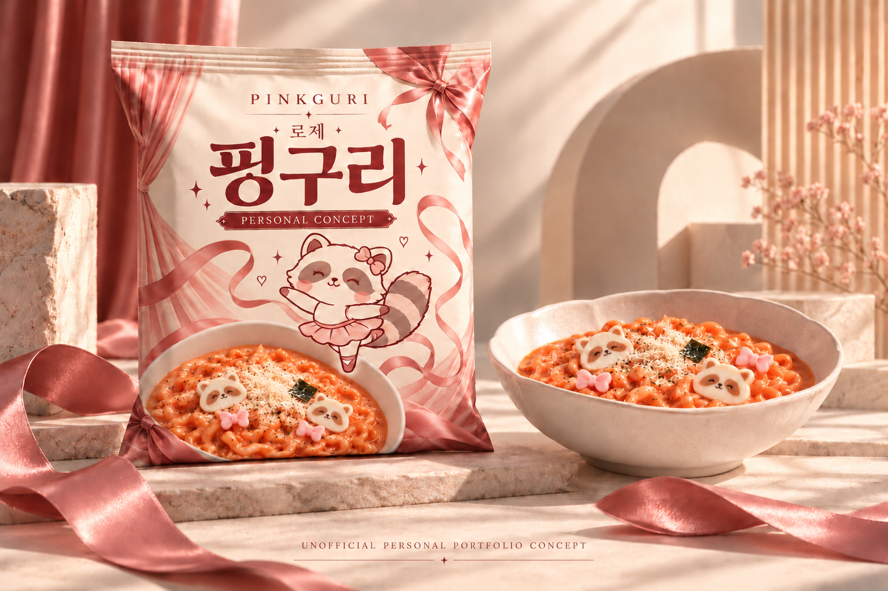
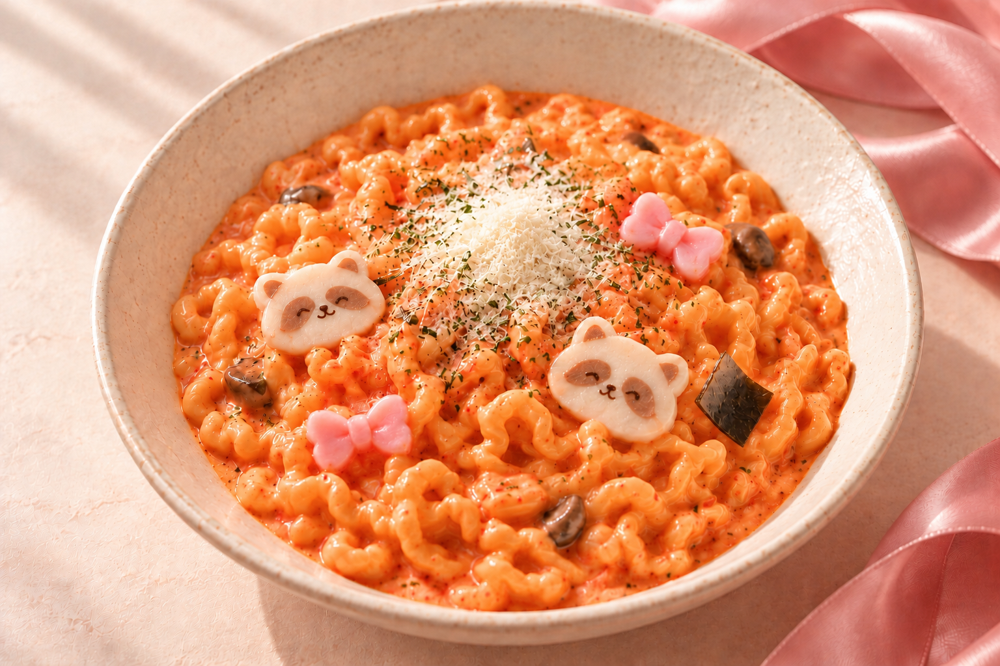
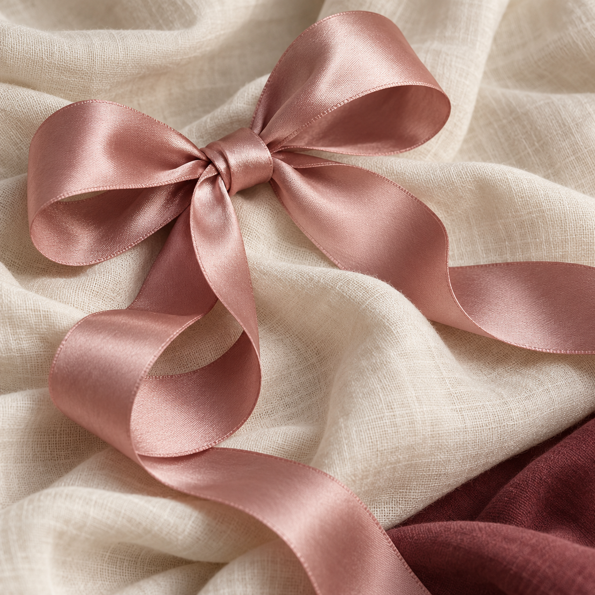
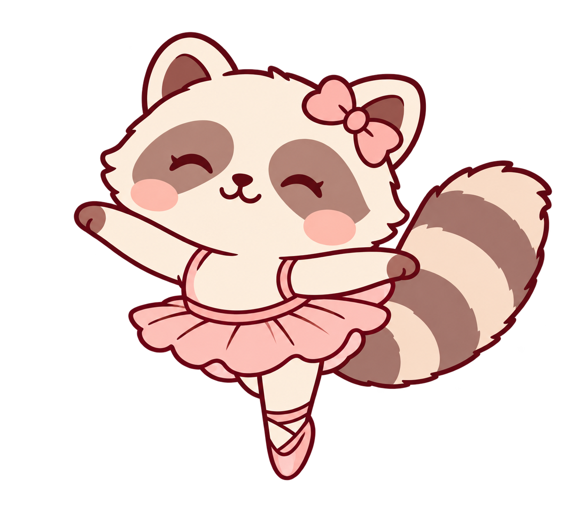

브랜드의 식감을
새로운 맛으로 확장
너구리는 굵고 쫄깃한 면발과 다시마를 특징으로 소개합니다.[1] 이 식감과 감칠맛이 로제 소스에서도 매력적으로 느껴질 수 있다는 제품 가설을 세웠습니다.
오동통한 면발의
우아하고 부드러운 변신.
로제 소스와 굵은 면의 만남을
발레코어의 감성으로 풀어낸
가상 신제품 기획 & 디자인 프로젝트.

너구리의 굵고 쫄깃한 면발을
로제 소스와 만나게 한다면 어떨까?
이 질문에서 출발해 제품의 구매 이유를 세우고, 귀여운 라인 너구리 ‘핑구리’와 발레코어를 패키지·상세페이지로 연결했습니다. 시장에서 확인한 사실과 새롭게 제안한 가설을 구분하며 기획 과정부터 시각화까지 전개합니다.
로제 자체의 새로움보다,
면과 소스의 새로운 조합에 주목했습니다.
너구리는 굵고 쫄깃한 면발과 다시마를 특징으로 소개합니다.[1] 이 식감과 감칠맛이 로제 소스에서도 매력적으로 느껴질 수 있다는 제품 가설을 세웠습니다.
신라면 로제와 로제불닭볶음면 등 로제형 제품은 이미 존재합니다.[2][3] 따라서 첫 로제라는 주장보다 굵은 면과 해물 감칠맛의 조화를 제품의 제안으로 삼았습니다.
로제의 부드러운 색과 면의 곡선을 핑크·새틴 리본·발레 동작으로 연결했습니다. 발레코어가 제품의 첫 관심을 높일지는 소비자 반응으로 확인할 디자인 가설입니다.

토마토 크림 소스가 굵은 면을 감싸고, 해물·다시마 감칠맛이 여운을 더하는 볶음면을 제안합니다.
AI 음식 시안입니다. 실제 맛·배합·원재료는 개발 전이며, 시식으로 검증해야 합니다.
공식 제품 자료로 카테고리의 맥락을 확인하고,
첫 구매와 재구매의 이유를 가정했습니다.
| 비교 대상 | 확인한 사실 | 기획에 반영한 판단 |
|---|---|---|
| 신라면 로제 같은 회사의 로제형 제품 | 크림·고추장·토마토를 결합한 로제 제품. 소스와 면의 조화도 공식적으로 강조합니다.[2] | ‘로제 소스’나 ‘소스가 어울리는 면’만으로 충분한 차이가 생기지는 않습니다. |
| 로제불닭볶음면 로제 볶음면 경쟁 | 삼양식품 공식 브랜드 목록에 로제불닭볶음면이 소개되어 있습니다.[3] | 로제 볶음면 카테고리에도 경쟁이 있습니다. 실제 맵기와 선호도의 우열은 조사 전입니다. |
| 볶음너구리 인접 브랜드 확장 | 농심은 굵은 면과 해물 풍미의 볶음너구리를 2026년 10월 한정 재출시했습니다.[4] | 해물 볶음면이라는 기본값에 토마토 크림과 핑구리의 경험을 더하는 방향을 탐색합니다. |
자료 확인일 2026.10.29 · 제품의 존재와 공식 설명을 확인한 비교입니다. 시장점유율·판매성과·실제 관능 우위를 나타내지 않습니다.
구매의 중심은 맛과 조리 편의성입니다. 귀여운 어묵과 플레이팅은 직접 완성한 한 끼에 작은 즐거움을 더하는 요소로 설정했습니다.
집에서 직접 조리하는 간편식 소비자 / 가상 인물
타깃의 행동과 페르소나는 기획 가설입니다. 20대는 탐색을 위한 연령 설정이며 성별을 제한하지 않습니다.
새로운 로제 라면을 찾는 사람에게,
굵은 라면 면발과 해물 감칠맛을 로제 소스로 즐기는
가상의 볶음면을 제안합니다.
둥근 단면과 꼬불꼬불한 굴곡이 보이는 굵은 면.
핵심 가설: 로제 소스와 함께 씹는 만족감을 줄 수 있다.
토마토 크림에 해물·다시마 감칠맛을 결합하는 방향.
핵심 가설: 익숙한 로제와 다른 여운을 줄 수 있다.
라인 캐릭터와 발레코어를 패키지·상세페이지·어묵 토핑에 연결.
핵심 가설: 첫 관심과 먹는 즐거움에 도움이 될 수 있다.
기획의 목표 영역을 나타낸 개념도입니다. 경쟁 제품의 실제 위치와 맛의 우열은 측정하지 않았습니다.
봉지형 로제 볶음면 1종을 가정합니다. 실제 배합·영양정보·조리법·가격은 미정이며 시제품과 소비자 조사를 통해 구체화할 항목입니다.
발레의 우아한 움직임과
귀여운 핑구리의 표정을 연결했습니다.

소스가 면을 감싸는 곡선을 새틴 리본의 흐름과 연결합니다. 제품 이미지에서 패키지까지 부드러운 움직임을 이어갑니다.
커튼과 크림색 배경으로 제품이 등장하는 장면을 만듭니다. 식품의 따뜻한 색감과 발레코어의 분위기를 함께 전달합니다.

둥근 얼굴, 웃는 눈, 줄무늬 꼬리를 가진 라인 너구리. 리본과 튀튀, 작은 발레 동작으로 친근한 첫인상을 만듭니다.
브랜드 무드 레퍼런스와 캐릭터 이미지는 AI로 제작했습니다.
큰 핑구리 이름과 작은 로제 표기로 이름과 맛을 함께 알립니다.
면의 식감, 소스, 감칠맛 순서로 제품을 설명합니다.
실제 개발 단계에서 기대와 맛이 일치하는지 확인합니다.
패키지와 상세페이지에 같은 캐릭터와 리본의 흐름을 남깁니다.
상세페이지의 장면 순서를 먼저 보여주고,
색·서체·레이아웃 기준을 따로 정리했습니다.
아래 이미지는 각 화면에 보여줄 장면의 예시입니다. 순서와 카피의 역할을 함께 확인할 수 있습니다.
큰 핑구리 이름과 패키지 컷.
“오동통한 면발의 우아하고 부드러운 변신.”으로 제품의 첫인상을 전합니다.
면과 로제 소스가 잘 보이는 음식 컷.
“로제의 부드러움에 꼬불한 즐거움을.”로 맛의 기대를 만듭니다.
음식 컷 아래 컬러 아이콘과 함께
면발·로제·어묵의 특징을 차례로 읽게 구성합니다.
“이렇게 즐겨보세요.”
3단계 조리 흐름과 완성 컷에 핑구리를 더해 마무리합니다.
여기부터는 장면 이미지가 아닌 색, 서체, 레이아웃과 캐릭터 사용 기준입니다.
제공된 Pretendard JP Variable 사용
포트폴리오 본문과 UI, 제목에 같은 서체를 적용했습니다.
Heading 64px / 650–800
Body 18–20px / 400
Caption 12–14px / 400–500
Letter spacing 0em
화면 폭에 따라 크기를 조정합니다. 패키지 안의 타이포그래피는 승인된 이미지 그대로 유지했습니다.
1920px 기준 · 너비 100% · 중앙 정렬.
넓은 여백과 장별 흐름으로 읽는 순서를 만듭니다.
선택한 2D 라인 캐릭터를 그대로 사용합니다. 입체 음영을 추가하거나 표정을 바꾸지 않습니다.
패키지의 색·비율·타이포 유지.
너구리·리본 어묵, 치즈가루와 작은 다시마로 음식 컷을 통일합니다.
귀여운 라인 너구리와
발레코어의 분위기가 만나는 패키지.
‘핑구리’를 제품의 가장 큰 이름으로, ‘로제’를 작은 맛 이름으로 배치해 두 정보를 분명하게 구분합니다.
웃는 눈과 볼터치, 둥근 몸과 꼬리로 친근함을 더하고 리본과 튀튀로 발레코어를 보여줍니다.
새틴 리본과 커튼, 로제 톤을 통일했습니다. 실제 그릇과 패키지 속 음식 컷 모두에 너구리 얼굴·리본 어묵과 치즈가루를 맞췄습니다. 토핑은 제품 개발 전 콘셉트 제안입니다.
큰 제품 컷에서 맛 포인트와 조리 흐름으로.
음식의 매력이 차례로 보이는 상세페이지.
오동통한 면발이
로제로 춤추는 시간.
로제 소스와 어우러지는
꼬불꼬불한 식감의 즐거움
해물과 다시마의 감칠맛에
토마토 크림을 더한 맛의 제안
한 그릇에도 담은 핑구리의 표정,
작은 리본으로 더한 귀여움
※ 가상 제품의 콘셉트 카피이며 실제 맛·배합·토핑 생산 가능성은 검증 전입니다.
오동통한 면발을 준비하는 첫 단계.
로제 소스가 잘 섞이도록 촉촉함을 남겨요.
너구리 얼굴과 작은 리본이 보이는 한 그릇 완성.
실제 조리법이 아닌 정보구조 예시입니다. 물의 양·조리 시간·투입 순서는 시제품 검증 후 확정합니다.
작게 로제 · 크게 핑구리
제품 컷 → Check Point → 음식 클로즈업과 특징 → 조리 흐름 순서로 구성했습니다. 참고 이미지의 정보 흐름을 핑구리의 색과 캐릭터로 재해석했습니다.